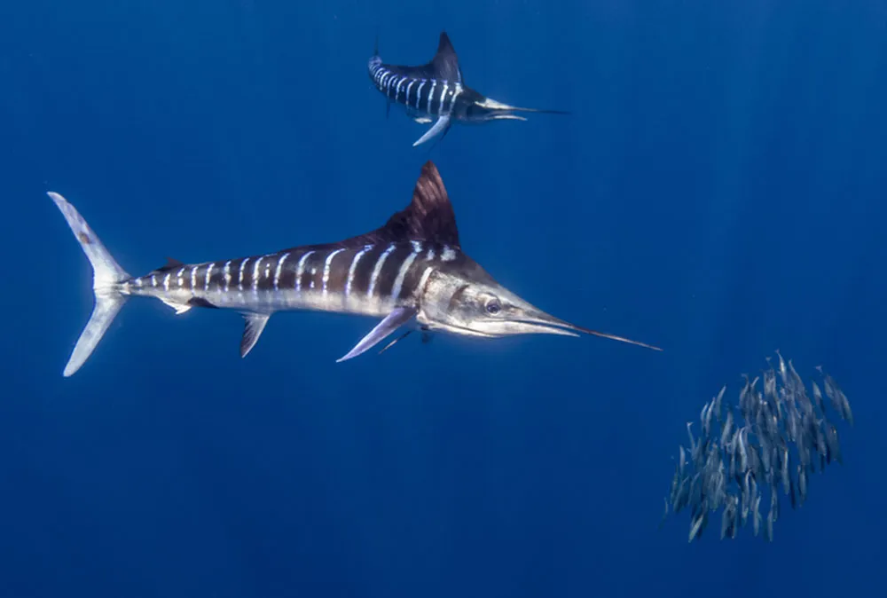

Marlin are powerful, fast-swimming fish found in warm ocean waters around the world. They typically live in tropical and subtropical regions, including the Atlantic, Pacific, and Indian Oceans. These fish prefer the open sea, often far from the coast, where they have plenty of space to swim and hunt. Marlin are pelagic, meaning they live in the open ocean rather than near the sea floor. They usually stay near the surface or mid-depths, where they chase after prey like squid, mackerel, and tuna.

Marlin in its habitat